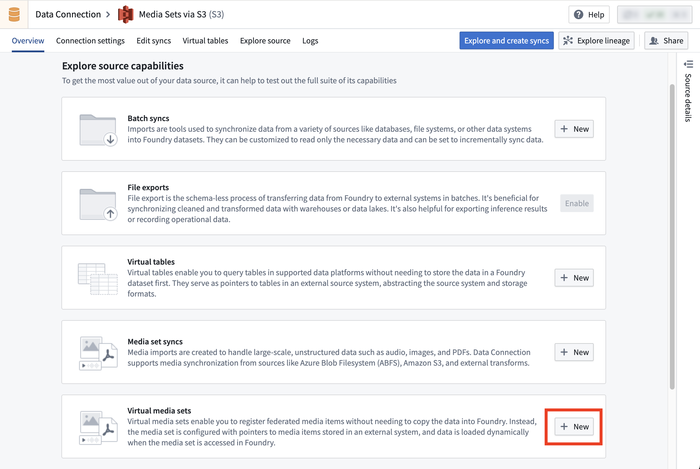

A virtual media set is a special type of media set that reads directly from an external source system without copying files into Foundry's backing store. This allows you to work with media files stored in external systems while maintaining the media set interface and functionality in Foundry.
Virtual media sets are currently supported for specific source types:
Virtual media set syncs cannot be created using agent connections.
While virtual media sets enable you to work with media files stored outside of Foundry without needing to incur storage costs from copying them to Foundry, virtual media sets have some limitations as described below:
To set up a virtual media set sync, follow the instructions in the media set sync documentation but select Virtual media set sync instead of Media set sync.

After creating a virtual media set in Data Connection, you can also register media items using Python transforms instead of using the virtual media set sync. This offers more control on the sync process:
# from the transforms-external-systems library
from transforms.external.systems import external_systems, Source, ResolvedSource
# from the transforms-media library
from transforms.mediasets import MediaSetOutput
from transforms.api import transform
@external_systems(
# the rid of the source created in Data Connection
source=Source("ri.magritte..source.abc123")
)
@transform(
# the rid of the virtual media set
mediaSetOutput=MediaSetOutput("ri.mio.main.media-set.abc123")
)
def compute(output, source: ResolvedSource):
# Specify the physical path from the source and the media item path (name) of the media item to register.
# The physical path is relative to the "subfolder" configured in the source.
output.register_media_item("physical path", "media item path")